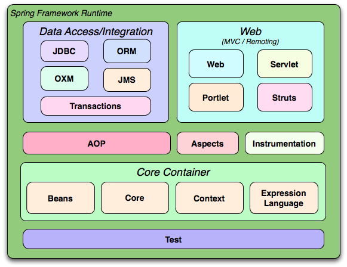
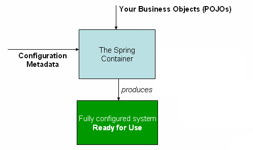
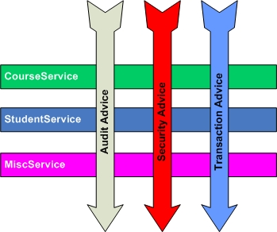
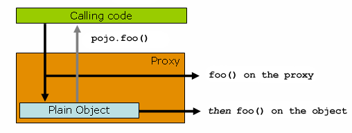

Spring Introduction
Spring Framework Brief
Created by Kevin Feng
Spring Framework
The Spring Framework is a lightweight solution and a potential one-stop-shop for building your enterprise-ready applications.
- modular
- non-intrusive
- ...
Spring Framework 3.x Overview
Spring Framework Usage
Spring Core
- OLP
- SFP
- ...
Spring DAO
- OLP
- IR4 use PFW instead
Spring Web
- JAX-RS instead
- SOA
Spring AOP
- OLP
Spring Test
- OLP
- Junit 3/4 directly
Spring Start up
Start up Project
Import the libraries
thirdparty_tools
Spring
3.0.5_full
thirdparty_tools
commons-logging
1.0.3
pom
Inversion of Control
(Dependency Injection)
IoC/DI
IoC (DI) is a process whereby objects define their dependencies, the container then injects those dependencies when it creates the bean.
Spring Ioc/DI
Container in Spring: ApplicationContext
Object in Spring: Bean
Application Context
Configuration Metadata:Xml based application context
Annotation based context
Java based context (since 3.1)
...
Xml based
ApplicationContext context = new ClassPathXmlApplicationContext("config.xml");
ApplicationContext context = new FileSystemXmlApplicationContext("config.xml");
Annotation Based
@Service
@Scope("prototype")
public class MessagePrinter {
final private MessageService service;
@Autowired
public MessagePrinter(MessageService service) {
this.service = service;
}
public void printMessage() {
count++;
System.out.println(this.service.getMessage());
}
}
@Component
@Repository @Service @Controller
Java based (since 3.1)
@Configuration
@ComponentScan(basePackages = "com.oocl.frm.demo.spring.annotated")
public class Application {
@Bean
MessageService mockMessageService() {
return () -> "Hello World!";
}
public static void main(String[] args) {
ApplicationContext context = new AnnotationConfigApplicationContext(Application.class);
MessageService service = context.getBean(MessageService.class);
}
}
Bean Definition
- id
- name
- scope
- constructor
- property
- autowiring mode
- lazy-initialization mode
- initialization method
- destruction method
Example
scope
prototype
singleton
request
session
global session
customized scope
Scope with dependencies?Autowiring
no
byName
byType
constructor
Limitationsinitialization method
Initialization Order@PostConstruct
InitializingBean
init-method
destruction method
Destruction Order@PreDestroy
DisposableBean
destroy-method
depends-on
explicit initialization dependency
Factory
factory-method
factory-bean
Method Injection
Lookup Method
Method Replacement
component-scan
import
place holder
LifeCycle
- Construct
- ContextAware
- BeanPostProcessor
- Initialization
- Destruction
the 'scope'
Annotation Based
- @Resource
- @Autowired
- @Required
- @Qualifier
Java Based
- @Configuration
- @Bean
- @Import
- @ComponentScan
Util Set & Misc
Collections
v1
v2
v3
Constant
Enum
Web application context
contextConfigLocation
/WEB-INF/daoContext.xml /WEB-INF/applicationContext.xml
org.springframework.web.context.ContextLoaderListener
WebApplicationContext was = ContextLoader.getCurrentWebApplicationContext();
WebApplicationContext ctx = WebApplicationContextUtils.getRequiredWebApplicationContext(this.getServletContext());
Only available in web context!
Obtain beans from context
Object getBean(String name) throws BeansException;
<T> T getBean(String name, Class<T> requiredType) throws BeansException;
<T> T getBean(Class<T> requiredType) throws BeansException;
Object getBean(String name, Object... args) throws BeansException;
String[] getBeanNamesForType(Class type);
<T> Map<String, T> getBeansOfType(Class<T> type) throws BeansException;
Pros & Cons
Pros:Dependency Injection
Decouple
Easier testing
etc.
Cons:Exception at runtime
Hard to debug
Spring AOP
Aspect-Oriented Programming
AOP Concepts
- Aspect
- Join point
- Advice
- Pointcut
- Introduction
- Target/Advised/Proxied object
- AOP proxy
- Weaving
- method execution in Spring
- JDK dynamic proxy/ CGLIB proxy
- at compile time/ load time/ runtime
Types of Advice
- Before advice
- After returning advice
- After throwing advice
- After (finally) advice
- Around advice
AOP Proxy


@AspectJ support
Enable @AspectJ support
Java based
@Configuration
@EnableAspectJAutoProxy
public class Application {
}
Xml based
Declaring an aspect
@Aspect
public class TestAnnotatedAspect {
}
Declaring an pointcut
@Pointcut(value = "execution(* com.oocl.frm.demo.spring.aop.TestAction.*(..))")
public void testCutoff() {
}
Pointcut designators supported
- execution - matching method
- within - limits matching within certain types
- this - limits the proxy object to the given type
- target - limits the target object to the given type
- args - limits the arguments to the given types
- @target - limits the class of the executing object has an annotation of the given type
- @args - limits the actual arguments passed have annotations of the given type(s)
- @within - limits matching within types have the given annotation
- @annotation - limits the subject has the given annotation
Pointcut examples
//the execution of any public method:
execution(public * *(..))
//the execution of any method with a name beginning with "set":
execution(* set*(..))
//the execution of any method defined by the AccountService interface:
execution(* com.xyz.service.AccountService.*(..))
//the execution of any method defined in the service package:
execution(* com.xyz.service.*.*(..))
//the execution of any method defined in the service package or a sub-package:
execution(* com.xyz.service..*.*(..))
//any method execution within the service package:
within(com.xyz.service.*)
//any method execution within the service package or a sub-package:
within(com.xyz.service..*)
Pointcut examples
//any method execution where the proxy implements the AccountService interface:
this(com.xyz.service.AccountService)
//any method execution where the target object implements the AccountService interface:
target(com.xyz.service.AccountService)
//any method execution which takes a single parameter, and where the argument passed at runtime is Serializable:
args(java.io.Serializable)
//any method execution where the target object has an @Transactional annotation:
@target(org.springframework.transaction.annotation.Transactional)
//any method execution where the declared type of the target object has an @Transactional annotation:
@within(org.springframework.transaction.annotation.Transactional)
//any method execution where the executing method has an @Transactional annotation:
@annotation(org.springframework.transaction.annotation.Transactional)
//any method execution which takes a single parameter, and where the runtime type of the argument passed has the @Classified annotation:
@args(com.xyz.security.Classified)
//any method execution on a Spring bean named 'tradeService':
bean(tradeService)
//any method execution on Spring beans having names that match the wildcard expression '*Service':
bean(*Service)
Declaring Before Advice
@Before(value = "testCutoff()")
public void before(JoinPoint joinPoint) throws Throwable {
System.out.println("before: " + joinPoint.getSignature() + "A" + count++);
}
@Before(value = "execution(* com.oocl.frm.demo.spring.aop.TestAction.*(..))")
public void before(JoinPoint joinPoint) throws Throwable {
System.out.println("before: " + joinPoint.getSignature() + "A" + count++);
}
Declaring After returning Advice
@AfterReturning(value = "testCutoff()")
public void afterReturning(JoinPoint joinPoint) throws Throwable {
System.out.println("after " + joinPoint.getSignature() + " return: A" + count++);
}
@AfterReturning(value = "testCutoff()", returning = "val")
public void afterReturning(JoinPoint joinPoint, Object val) throws Throwable {
System.out.println("after " + joinPoint.getSignature() + " return: " + val + "A" + count++);
}
Declaring After throwing Advice
@AfterThrowing(value = "testCutoff()")
public void afterThrowing(JoinPoint joinPoint) throws Throwable {
System.out.println("after throw exception: " + joinPoint.getSignature() + "A" + count++);
}
@AfterThrowing(value = "testCutoff()", throwing = "ex")
public void afterThrowing(JoinPoint joinPoint, Exception ex) throws Throwable {
System.out.println("after throw exception: " + joinPoint.getSignature() + "A" + count++);
throw ex;
}
Declaring After Advice
@After(value = "testCutoff()")
public void after(JoinPoint joinPoint) throws Throwable {
System.out.println("after: " + joinPoint.getSignature() + "A" + count++);
}
Declaring Around Advice
@Around(value = "testCutoff()")
public Object invoke(ProceedingJoinPoint joinPoint) throws Throwable {
System.out.println("around before:" + "A" + count++);
Object proceed = joinPoint.proceed();
System.out.println("around after:" + "A" + count++);
return proceed;
}
Schema-based AOP
Declaring the aspect
Advice parameters
JoinPoint
@Around(value = "testCutoff() && args(value)")
public Object invoke(ProceedingJoinPoint joinPoint, Object value) throws Throwable {
System.out.println("around before:" + "A" + count++);
System.out.println("args:" + value);
Object proceed = joinPoint.proceed();
System.out.println("around after:" + "A" + count++);
return proceed;
}
Advice ordering
The highest precedence advice runs first on the way in
The highest precedence advice runs last on the way out
@Aspect
public class TestAnnotatedAspect implements Ordered{
@Override
public int getOrder() {
return 2;
}
}
Spring AOP API
Spring Advice API
public class TestAdvice implements MethodBeforeAdvice, MethodInterceptor, ThrowsAdvice, AfterReturningAdvice {
@Override
public Object invoke(MethodInvocation methodInvocation) throws Throwable {
System.out.println("around before: " + this);
Object proceed = methodInvocation.proceed();
System.out.println("around after: " + this);
return proceed;
}
@Override
public void before(Method method, Object[] objects, Object o) throws Throwable {
System.out.println("before: " + this);
}
public void afterThrowing(Throwable throwable) throws Throwable {
System.out.println("after throw exception: " + this);
throw throwable;
}
@Override
public void afterReturning(Object o, Method method, Object[] objects, Object o1) throws Throwable {
System.out.println("after return: " + this);
}
}
Advisors